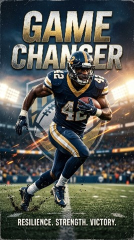
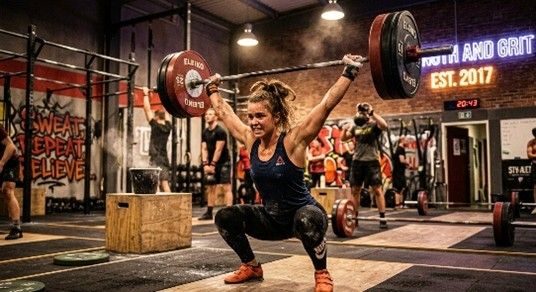
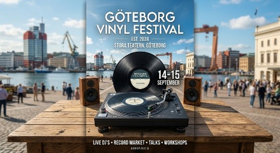

En undersökning av AI-driven bildgenerering — från enkel prompt till färdig matchdagsposter.
firefly.adobe.com ↗Adobe Firefly är ett AI-verktyg för bildgenerering utvecklat av Adobe. Det låter användare skapa bilder direkt från textbeskrivningar — så kallade prompts — på naturligt språk. Verktyget är enkelt att använda och kräver inga avancerade förkunskaper, vilket gör det lätt att snabbt omvandla idéer till visuella bilder.
Syftet med att testa verktyget var att undersöka hur AI tolkar olika instruktioner och hur små förändringar i texten kan påverka resultatet. Genom att experimentera med olika formuleringar, stilar och detaljer kan man se hur bilden förändras och utvecklas.
Gratis med 25 krediter per månad. Vill man ha fler måste man betala för en prenumeration. För det här projektet räckte gratisversionen gott och väl.
Designers, marknadsförare, studenter och alla som vill omvandla text till bild snabbt. Passar bra för den som jobbar med kreativa projekt men inte kan rita.
Ja — ett gratis Adobe-konto räcker för att komma igång. Enkelt att registrera sig på firefly.adobe.com.
Skapa affischer, bakgrundsbilder, konceptkonst, logotypidéer, grafik till sociala medier eller bara utforska kreativa idéer.
Temat för alla tester var att skapa spelarposter och matchgrafik med fotbollstema — från enkel prompt till färdig matchdagsposter.
Resultatet blev en amerikansk fotbollsspelare — inte en fotbollsspelare i traditionell bemärkelse. AI:n tolkade "football" som amerikansk fotboll, vilket visar hur viktigt det är att vara tydlig i sina promptar. Bilden var ändå välgjord tekniskt sett.

Med fler detaljer i prompten förändrades resultatet markant. Ljussättning, färger och stämning gick att styra genom texten. Det här testet visade tydligt hur mycket en välformulerad prompt påverkar slutresultatet jämfört med en kort och enkel.

Samma motiv testades i fyra olika stilar. Tyvärr verkade Firefly inte ha något minne av tidigare promptar — när jag bad den "bygga vidare" på föregående bild ignorerade den det och skapade något nytt. Det ledde t.ex. till en person på ett gym i stället för en fotbollsspelare. Lärdom: ange alltid hela kontexten i varje ny prompt.

Det här var det bästa resultatet av alla fyra testerna. Med en tydlig och detaljerad prompt levererade Firefly en riktigt snygg bild — gamla men realistiska spelarstilar med matchdagskänsla. Det är ungefär det jag hade i åtanke från början. Tydlig prompt = bra resultat.
Adobe Firefly är ett kraftfullt verktyg när man vet hur man använder det. Den viktigaste lärdomen från projektet är att kvaliteten på resultatet är direkt kopplad till hur välformulerad prompten är.
Enkelt att komma igång. Producerar snygga bilder när prompten är tydlig. Gratis för grundläggande användning. Bra för att testa kreativa idéer snabbt.
Saknar minne mellan promptar — man kan inte säga "gör samma sak men ändra X". Missförstår ibland ord (football = amerikansk fotboll). Kräver väldigt specifika promptar.
Ja, verktyget är användbart om man behöver snabb grafik till ett projekt, en presentation eller sociala medier — och inte har tid att skapa det manuellt.
Designers, marknadsförare och innehållsskapare. Också bra för elever och studenter som behöver snabb grafik till skolprojekt.
Gratisversionen räcker för tillfällig användning. Vill man använda det regelbundet behöver man betala — 25 krediter tar slut snabbt om man testar mycket.
Skriv alltid på engelska. Var specifik med stil, ljussättning, färger och stämning. Repetera viktig kontext i varje ny prompt.